The terms of the covariance matrix  are defined by:
are defined by:
 |
(C.8) |
Its leading diagonal terms may be recognised as equalling the variances of each of our 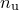 variables; its cross terms measure the correlation between the variables. If a component 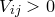, it implies that higher estimates of the coefficient  make higher estimates of 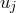 more favourable also; if 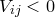, the converse is true.
make higher estimates of 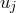 more favourable also; if 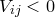, the converse is true.
It is a standard statistical result that 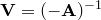. In the remainder of this section we prove this; readers who are willing to accept this may skip onto Section C.5.
Using 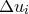 to denote 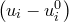, we may proceed by rewriting Equation () as:
 |
 |
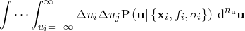 | (C.9) | ||
 |
|
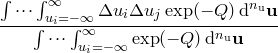 |
The normalisation factor in the denominator of this expression, which we denote as  , the partition function, may be evaluated by -dimensional Gaussian integration, and is a standard result:
, the partition function, may be evaluated by -dimensional Gaussian integration, and is a standard result:
| 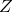 | |
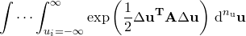 | (C.10) | ||
|
|
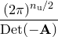 |
Differentiating 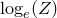 with respect of any given component of the Hessian matrix 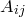 yields:
| 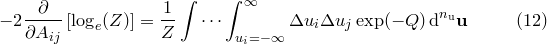 | (C.11) |
which we may identify as equalling :
| 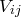 | |
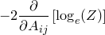 | (C.12) | ||
|
|
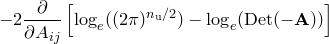 | |||
|
|
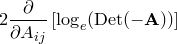 |
This expression may be simplified by recalling that the determinant of a matrix is equal to the scalar product of any of its rows with its cofactors, yielding the result:
| 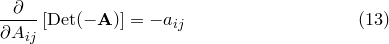 | (C.13) |
where 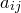 is the cofactor of . Substituting this into Equation () yields:
| 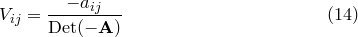 | (C.14) |
Recalling that the adjoint 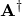 of the Hessian matrix is the matrix of cofactors of its transpose, and that  is symmetric, we may write:
is symmetric, we may write:
| 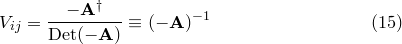 | (C.15) |
which proves the result stated earlier.